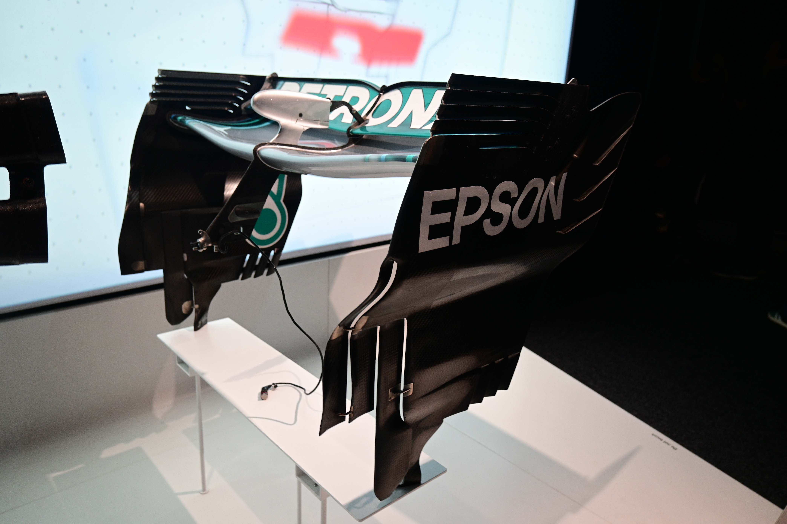
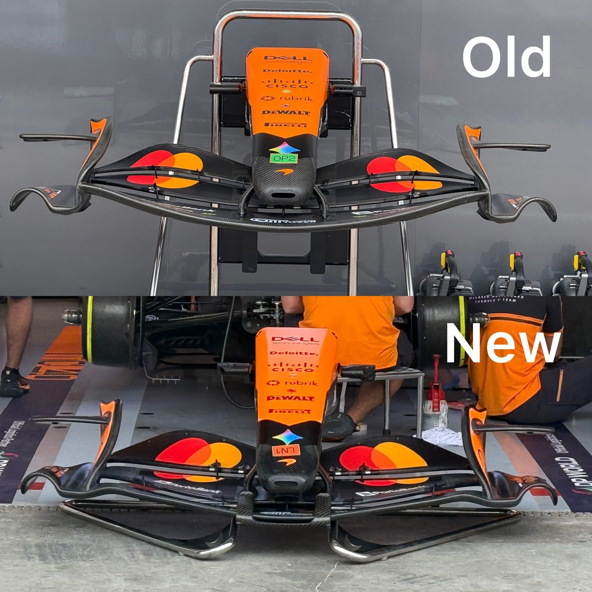
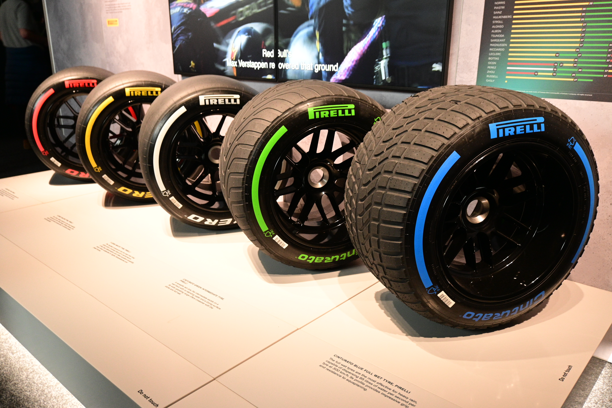
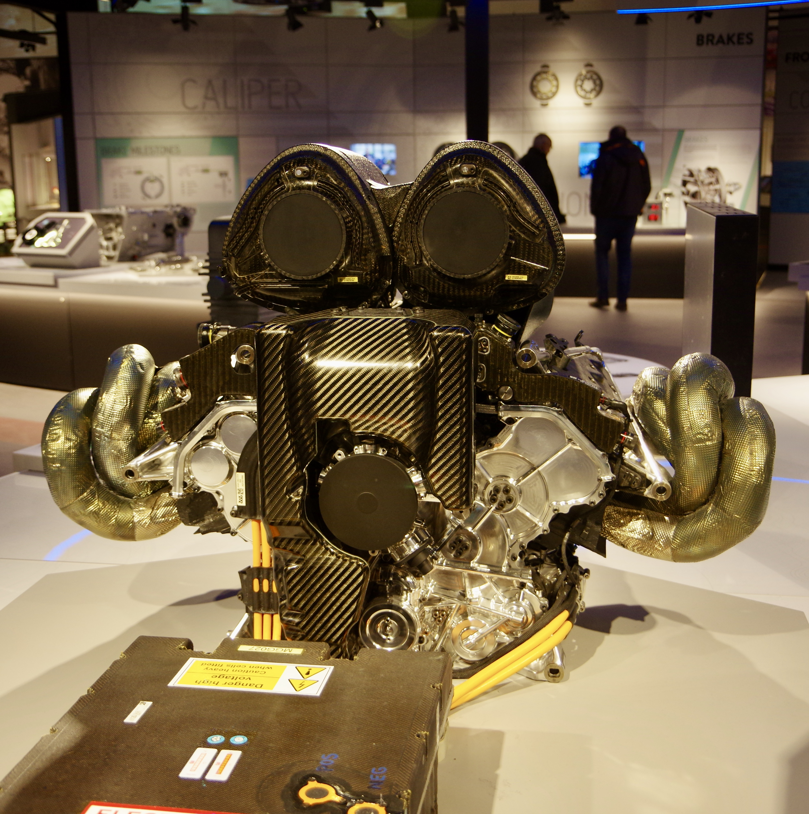

A ciência
da velocidade.
Três ideias que explicam por que um carro de Fórmula 1 faz o que faz.
Leitura: cerca de 10 minutos
Introdução
Em 2026 a Fórmula 1 reescreveu o manual: carros menores, asas que se mexem e uma unidade de potência com muito mais eletricidade.
Para entender uma corrida, ajuda saber três coisas: como o ar empurra o carro contra o chão, como os pneus definem o ritmo e de onde vem a potência. Os três assuntos se influenciam, e as novas regras mexeram nos três ao mesmo tempo.
Aerodinâmica e engenharia
Asas que
se mexem
O ar como parceiro
Quando o ar passa pelas asas e pelo assoalho, ele empurra o carro para baixo. Essa força se chama downforce e deixa o carro colado ao asfalto nas curvas. O preço é o arrasto, que freia o carro nas retas.
Engenheiros passam o ano tentando ter muito downforce com pouco arrasto. É um equilíbrio, e cada circuito pede um acerto diferente.
O que mudou em 2026
- Asas ativas: as asas dianteira e traseira se movem. Nas retas abrem e reduzem o arrasto (modo reta); nas curvas fecham para manter a aderência (modo curva).
- Fim do DRS: o sistema anterior de asa traseira aberta saiu de cena.
- Carros menores: a distância entre os eixos encolheu 200 mm, para no máximo 3,4 m, e o assoalho ficou 100 mm mais estreito, com 1,9 m.
- Mais leves: o peso mínimo caiu de 800 kg para 768 kg segundo a F1; a McLaren cita 798 kg como valor anterior, por isso preferimos mostrar a regra nova.
- Assoalho mais plano: os túneis do efeito solo foram removidos, e a F1 estima menos downforce e até 40% menos arrasto.
Menos arrasto nas retas, mais aderência nas curvas: o carro agora muda de forma durante a volta.

Pneus e estratégia
Quatro
manchas de
borracha
Os compostos
A Pirelli é a fornecedora única desde 2011. Para o asfalto seco existem três compostos: macio, médio e duro. Para pista molhada, o intermediário e o de chuva extrema.
O macio dá mais aderência e acaba mais rápido; o duro dura mais, mas é mais lento por volta. A cada corrida a Pirelli leva três dos compostos secos.
As regras que criam estratégia
- Em corrida seca, o piloto precisa usar dois compostos diferentes, o que exige ao menos uma parada.
- Por fim de semana, cada piloto recebe um número limitado de jogos: sete deles ficam para a classificação e a corrida, e um precisa ser macio para o Q3.
- Em 2026 os pneus ficam mais estreitos: cerca de 25 mm na frente e 30 mm atrás.
Quando parar?
Parar cedo (undercut) pode render ar limpo e pneus novos antes do rival. Parar tarde (overcut) funciona quando o pneu velho ainda aguenta e o carro da frente fica preso no tráfego. Um safety car também pode mudar tudo, porque a parada sai mais barata.

Tecnologia e unidade de potência
Metade
elétrica
O que continua
O motor a combustão segue sendo um V6 de 1,6 litro com turbo. Ele agora trabalha junto de uma parte elétrica muito maior, em uma divisão perto de 50% para cada lado.
O que muda
- MGU-H removido: a peça que aproveitava o calor do escapamento saiu.
- MGU-K mais forte: recupera e entrega cerca de três vezes mais energia, com até 350 kW.
- Combustível sustentável: as unidades usam combustíveis avançados.
- Overtake Mode (modo de ultrapassagem): quem chega a menos de um segundo do carro da frente em um ponto de detecção ganha energia extra na volta seguinte. Substitui o DRS e vale para todos os carros.
- Boost e Recharge: o piloto pode pedir mais potência para atacar ou defender e controlar a recuperação de energia ao tirar o pé.
Gerenciar a bateria virou parte da pilotagem.

- MGU-H e MGU-K, DRS, assoalho com túneis de efeito solo, carros mais longos e mais pesados.
- MGU-K mais forte, Overtake Mode, asas ativas, assoalho plano, carros menores com 768 kg de peso mínimo.
Antes de 2026
Em 2026
Palavras que você vai ouvir.
- Downforce
- Força do ar que empurra o carro para baixo e ajuda nas curvas.
- Arrasto
- Resistência do ar contra o avanço do carro. Menos arrasto, mais velocidade final.
- Stint
- Trecho da corrida entre duas paradas nos boxes.
- Undercut
- Parar antes do rival para sair com pneus novos e ganhar a posição.
- MGU-K
- Motor-gerador ligado ao eixo, que recupera energia na frenagem e a devolve.
- Overtake Mode
- Energia extra para quem está a menos de um segundo do carro da frente.